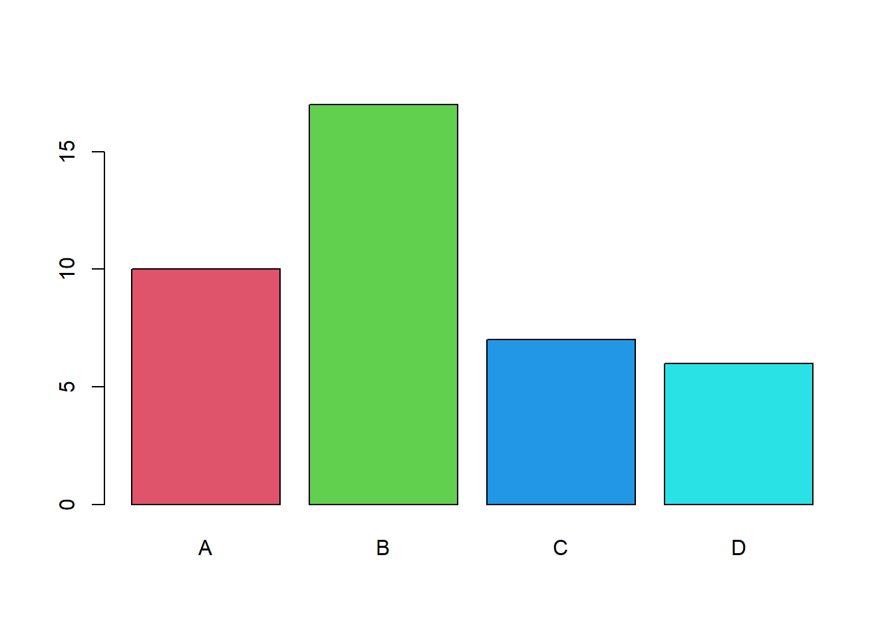

2.10 Exercício 2: Análise Exploratória de Dados
x <- c(1, 2, 0, 3, 2, 1, 1, 0, 6, 1, 0, 4, 0, 0, 3,
1, 1, 3, 0, 2, 1, 1, 1, 2, 1, 2, 4, 0, 0, 0)
length(x)## [1] 30min(x)## [1] 0max(x)## [1] 6table(x)## x
## 0 1 2 3 4 6
## 9 10 5 3 2 1CrossTable(x)##
##
## Cell Contents
## |-------------------------|
## | N |
## | N / Table Total |
## |-------------------------|
##
##
## Total Observations in Table: 30
##
##
## | 0 | 1 | 2 | 3 | 4 |
## |-----------|-----------|-----------|-----------|-----------|
## | 9 | 10 | 5 | 3 | 2 |
## | 0.300 | 0.333 | 0.167 | 0.100 | 0.067 |
## |-----------|-----------|-----------|-----------|-----------|
##
##
## | 6 |
## |-----------|
## | 1 |
## | 0.033 |
## |-----------|
##
##
##
## (freq = table(cut(x, breaks = 7, include.lowest = T, right = T)))##
## [-0.006,0.857] (0.857,1.71] (1.71,2.57] (2.57,3.43] (3.43,4.29]
## 9 10 5 3 2
## (4.29,5.14] (5.14,6.01]
## 0 1barplot(freq, col = 2:8, xlab = "Classes", ylab = "Frequências")
round(pareto.chart(data = freq, plot = T, col = 2:8), 2)##
## Pareto chart analysis for freq
## Frequency Cum.Freq. Percentage Cum.Percent.
## (0.857,1.71] 10.00 10.00 33.33 33.33
## [-0.006,0.857] 9.00 19.00 30.00 63.33
## (1.71,2.57] 5.00 24.00 16.67 80.00
## (2.57,3.43] 3.00 27.00 10.00 90.00
## (3.43,4.29] 2.00 29.00 6.67 96.67
## (5.14,6.01] 1.00 30.00 3.33 100.00
## (4.29,5.14] 0.00 30.00 0.00 100.00Regras para determinar a quantidade de classes (k)
- Regra de Sturges (logaritmo)
\[k = 1 + 3,3 log_{10}(n)\]
- Regra da potência de base 2 (\(log_2\))
\[k = \text{ menor valor inteiro tal que } 2^k \geq n\]
- Regra da raiz quadrada
\[k=sqrt(n)\]
- Regra do bom senso
A quantidade de classes deve garantir observar a distribuição de valores.